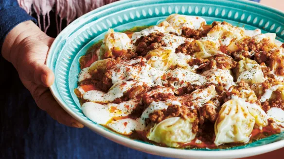
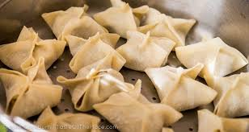

Mantu

These are traditional steamed dumplings from Afghanistan. The meat is usually combined with the tomato sauce that is served on top,
but my family prefers the dumplings filled with a meat mixture instead.
Traditionally, these are made for special occasions, but they're actually very quick and easy to make, so if you're pressed for time, this is a great meal to serve.
Even if you don't think you'd like the yogurt sauce, I really encourage you to try it! It blends with the tomato sauce to become very creamy, like a curry.
Ingredients
Filling
- 1/2lb ground beef
- 2 carrots, chopped
- 1 yellow onion, chopped
- 1/2 heaping tsp coriander
- 1 heaping tsp curry powder
- 1 tsp salt and a sprinkle of black pepper
Dough
- 1 3/4 cup flour
- 1/2 tbsp sunflower or olive oil (sunflower oil is traditional)
- 1/2 - 1 cup of water (add a little at a time when kneading)
- Tiny bit of salt, like a little shake from a salt shaker
Sauce
- 1 or two yellow onions
- 5 large tomatoes
- enough olive oil to saute the onions
- 1/2 - 1 heaping tsp garlic powder
- 1 heaping tsp curry powder
- 1 heaping tsp sweet or smoked paprika
- 1 heaping tsp chili powder
- 1 tsp sugar 1 tsp salt
Garlic Yogurt
- 1 cup or so plain yogurt
- 1/2 - 1tsp garlic powder
Steps
- coarsely chop the onion and carrot, add to a food processor, blend into a paste. add the beef to the food processor, blend until smooth and the fat in the meat is visible (little white strands) the food processor is crucial, it makes the meat super super super tender
- put in a bowl, add everything else and mix well, cover and put in fridge
- add all the dough ingredients and the minimum amount of water, knead together, if you need more water add it. the dough should be smooth and pliable
- cut the dough into sixteen even balls, roll out into wrappers that are about four inches diameter
- put about two heaping tsps of the filling into each wrapper, or split the filling into sixteen portions and add each portion to a wrapper.
- to fold the dumplings, make parcel shapes. Take the top and bottom and fold them to meet each other, and take the left and right to fold and meet each other. make sure they're pretty sealed so the broth won't leak out.

they should look like this ^ but completely sealed or else flavor will leak out.
- set up your steamer, if they're touching a little it's okay. steam over a rolling boil for forty minutes
- meanwhile, cut the onions into half moons and add that, the olive oil, and all the spices, sugar, and salt to a sauce pot.
- saute until the onions are just caramelized, then add all the tomatoes (which are cut up into halves or quarters or wedges, etc)
- stir everything around over medium high heat, the tomatoes should break up and form a sauce. keep stirring to make sure it doesn't burn
- once the tomatoes are all broken up and the mixture is a sauce, raise the temperature so the mixture is nearly boiling, and stir it occasionally. adjust heat as necessary. after about twenty or thirty minutes the mixture should be reduced ( when you take a spoonful, it shouldn't run off just like water, it should be a bit thicker)
- when the dumplings are done, ladle half the tomato sauce on the bottom of a big heat-shock resistant bowl. Put the dumplings on top, and then cover with the rest of the tomato sauce.
- take some plain yogurt and mix it with some garlic powder (1/2 tsp or so). drizzle it on top of the dumplings.
As they say in Farsi, nooshe jaan! May it nourish your soul!
Take me home!
Home Page